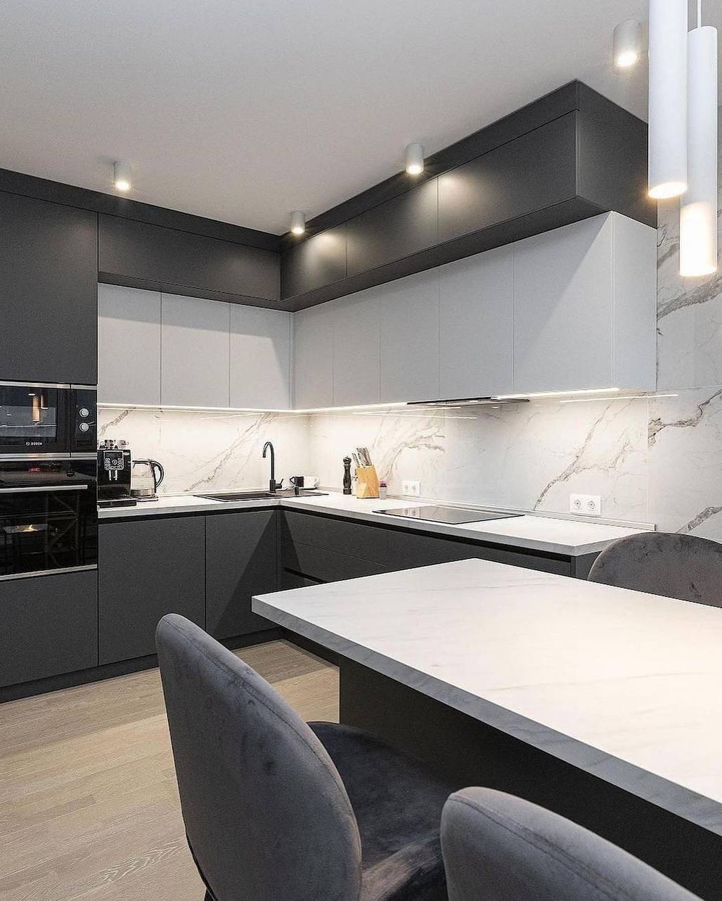
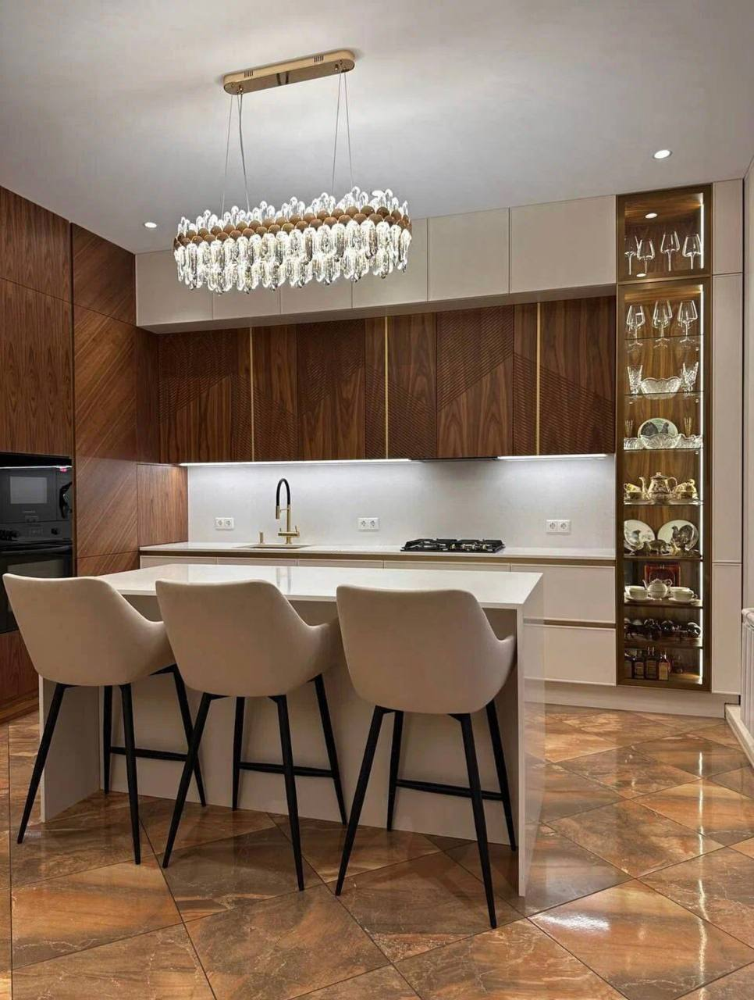

Столешница для кухни: кварц, HPL или натуральный камень
Короткий ответ: для ежедневной кухни мы чаще ставим кварцевый агломерат 20 мм, HPL — когда кварц выходит за бюджет, натуральный камень — когда важна уникальная текстура. Каменная часть сметы в наших проектах — от 140 000 до 223 000 ₽.

Столешница — это не только материал
Столешница состоит из плиты, обработки торцов, выпилов под мойку и варочную панель, примыкания к стене и стыков, если длины листа не хватает. Две столешницы из одного материала могут вести себя по-разному именно из-за кромки и герметизации.
Свес над корпусом у нас — 30–40 мм, выпилы герметизируются, стык со стеной закрывается эластичным герметиком. Стандарт 40/60-ST-042 требует выполнять стык плит в незаметной зоне и защищать торец от воды. Поэтому сравнивать материалы нужно вместе с обработкой: кварц с открытым торцом проиграет аккуратному HPL.
Сравнение материалов
| Материал | Основа | Влага | Механика | Уход | Где уместен |
|---|---|---|---|---|---|
| ЛДСП с кромкой | Плита и кромка | Боится воды на стыке | Средняя | Простой | Бюджетная кухня |
| HPL, компакт-ламинат | Прессованный ламинат | Устойчив | Высокая | Простой | Средний бюджет |
| Кварцевый агломерат 20 мм | Кварц и связующее | Не впитывает | Высокая | Без кислот | Ежедневная кухня |
| Натуральный камень | Природный камень | Воды не боится | Высокая | Защита от кислот | Акцентный проект |
Разница между материалами проявляется не в первый месяц, а на третий год: у ЛДСП начинает пухнуть стык, у HPL становится заметна линия соединения, у кварца — только следы от горячей посуды, если её ставили без подставки.
Кварцевый агломерат
Кварц 20 мм — рабочая лошадка кухни. Он не впитывает воду и не царапается бытовыми предметами, поэтому спокойно переносит ежедневную готовку и уборку. Ограничения два: концентрированные кислоты и горячая посуда прямо из духовки. Под горячее нужна подставка — это дешевле, чем менять столешницу.
В проектах кварц обычно идёт вместе с фартуком из того же материала, и это меняет смету. Реальные цифры:
| Проект | Кухня | Каменная часть | Итого |
|---|---|---|---|
| Тёмно-серая кухня с островом | 272 000 ₽ | 144 000 ₽ | 416 000 ₽ |
| Кухня-гостиная из ALVIC | 330 000 ₽ | 140 000 ₽ | 470 000 ₽ |
| Кухня с островом-винотекой | 361 000 ₽ | 157 000 ₽ | 518 000 ₽ |
| Кухня с островом из ALVIC | 495 000 ₽ | 160 000 ₽ | 655 000 ₽ |
| Кухня в эмали с витринами | 691 000 ₽ | 223 000 ₽ | 914 000 ₽ |
Каменная часть — от 140 000 до 223 000 ₽. В части проектов в неё входит не только столешница, но и фартук; в проекте с тёмно-серой кухней это прямо указано в спецификации. Разница зависит от длины, количества выпилов и того, входит ли фартук.

HPL и компакт-ламинат
HPL, или компакт-ламинат, — цельный прессованный материал. Он устойчив к влаге и механике, поэтому подходит для кухни с интенсивной готовкой. По стоимости он находится между ЛДСП и кварцем: дешевле кварца, дороже ламинированной плиты.
Главный компромисс — стыки. Компакт-ламинат всё равно монтируется сегментами, и на соединении остаётся линия. Если столешница длинная, стык проектируют в незаметном месте и герметизируют. Для небольшой кухни, где шов попадает в угол, HPL — разумный выбор; для острова, который видно со всех сторон, лучше кварц.
Натуральный камень
Камень даёт уникальный рисунок: двух одинаковых слэбов не найти. Он дороже кварца и требует ухода — в первую очередь защиты от кислот. Для кварцевого агломерата концентрированные кислоты тоже запрещены, но для натурального камня это правило строже: пятно может остаться навсегда.
Камень тяжелее и сложнее в монтаже. Столешницу режут по шаблону после замера, а не по эскизу, поэтому срок изготовления сдвигается. Зато на большом острове или подоконнике-столешнице он выглядит как монолит, которого не добиться от ламината.
Натуральный камень имеет смысл, когда текстура — часть проекта. Если задача — практичная поверхность на десять лет, кварц закрывает её с меньшим количеством оговорок.
ЛДСП и пластик: бюджетный сценарий
ЛДСП с влагостойкой кромкой — самый доступный вариант. В проекте за 275 000 ₽ столешница из пластика с фактурой дерева, в проекте за 325 000 ₽ — пластик Egger. Для аккуратной эксплуатации этого хватает, но вода на стыке — главный риск: если герметизация нарушена, плита разбухает.
Пластик на влагостойкой плите ведёт себя лучше ЛДСП с тонкой кромкой, но принцип тот же: всё решают торцы и примыкания. Если планируете кухню на 10–12 лет и готовы добавить бюджет, разумнее сразу заложить кварц — заменить столешницу потом дороже, чем поставить её при производстве.
Выпилы, стыки и примыкания
- Выпил под мойку и варочную панель — отдельная операция; её стоимость зависит от материала и количества выпилов.
- Торцы выпилов герметизируются: вода не должна попадать в плиту.
- Стык со стеной — эластичный герметик, а не жёсткая затирка.
- Стык двух плит — в незаметной зоне, с герметизацией.
- Свес над корпусом — 30–40 мм; слишком большой свес работает как рычаг.
Не проектируйте розетки и выводы в зоне выпилов. Перенос коммуникаций после изготовления столешницы почти всегда означает новый выпил или новую столешницу.
Как выбрать под свой сценарий
- Готовите каждый день, есть дети. Кварцевый агломерат 20 мм: не впитывает, не боится бытовых царапин.
- Бюджет ограничен, но нужна прочность. HPL: дешевле кварца, прочнее ЛДСП.
- Нужна уникальная текстура. Натуральный камень, с расчётом на уход.
- Кухня сдаётся в аренду или собирается на короткий срок. ЛДСП или пластик с аккуратной герметизацией.
- Остров видно со всех сторон. Кварц или камень: стык на виду недопустим.
Гарантия на столешницу зависит от материала — выпилы, стыки и герметизация входят в неё, но срок фиксируется в договоре. Подробнее — на странице «Гарантия».
Выбрать материал проще, когда видно готовые кухни: в портфолио у каждого проекта указаны столешница и итоговая цена. А если вы ещё на этапе планирования — начните с раздела «Кухни на заказ». Другие разборы материалов — в журнале.
Частые вопросы
Что дешевле — кварц или натуральный камень?
Натуральный камень дороже кварца. В наших проектах каменная часть сметы на кварцевом агломерате — от 140 000 до 223 000 ₽; камень в эту вилку не укладывается, потому что слэб и обработка стоят дороже. Точную цифру даёт расчёт по конкретному слэбу.
Можно ли ставить горячую посуду на кварц?
Нет, не прямо из духовки. Кварцевый агломерат не любит резкий нагрев и концентрированные кислоты. Используйте подставку: это дешевле, чем менять столешницу.
Нужен ли фартук из того же материала?
Не обязательно. В проектах кварц часто идёт со фартуком из того же агломерата — это выглядит монолитно, но увеличивает каменную часть сметы. Альтернатива — керамогранит, как в проекте с дымчатой плёнкой ПВХ и широкоформатной стеновой панелью.
Сколько ждать столешницу?
Камень режут по шаблону после контрольного замера, поэтому столешница изготавливается после него. Кухни с эмалью и камнем занимают 25–35 дней — дольше, чем кухни с пластиком.